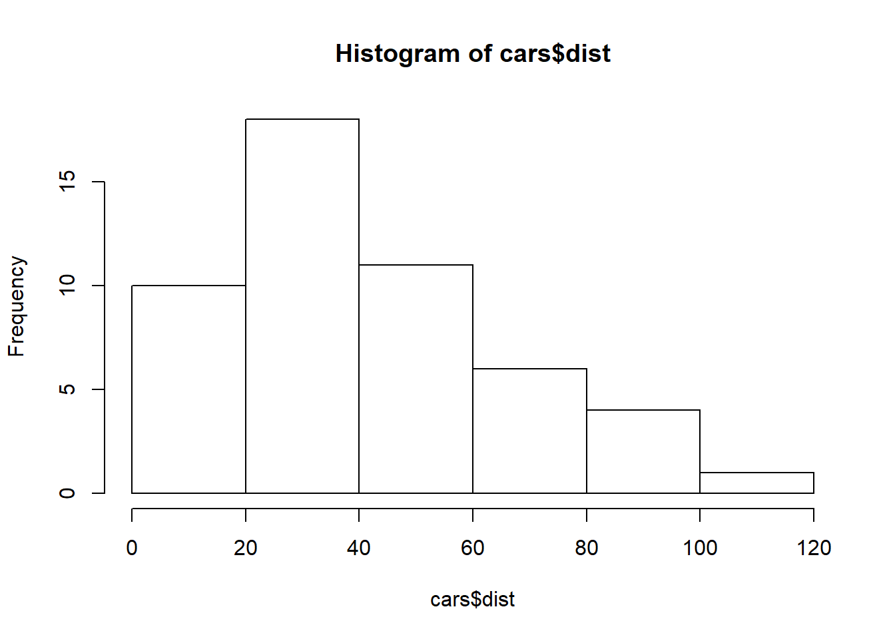
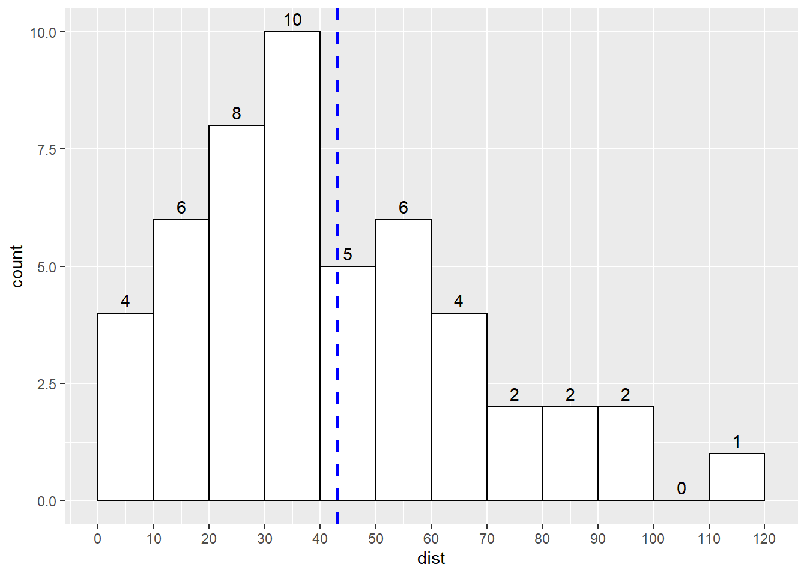
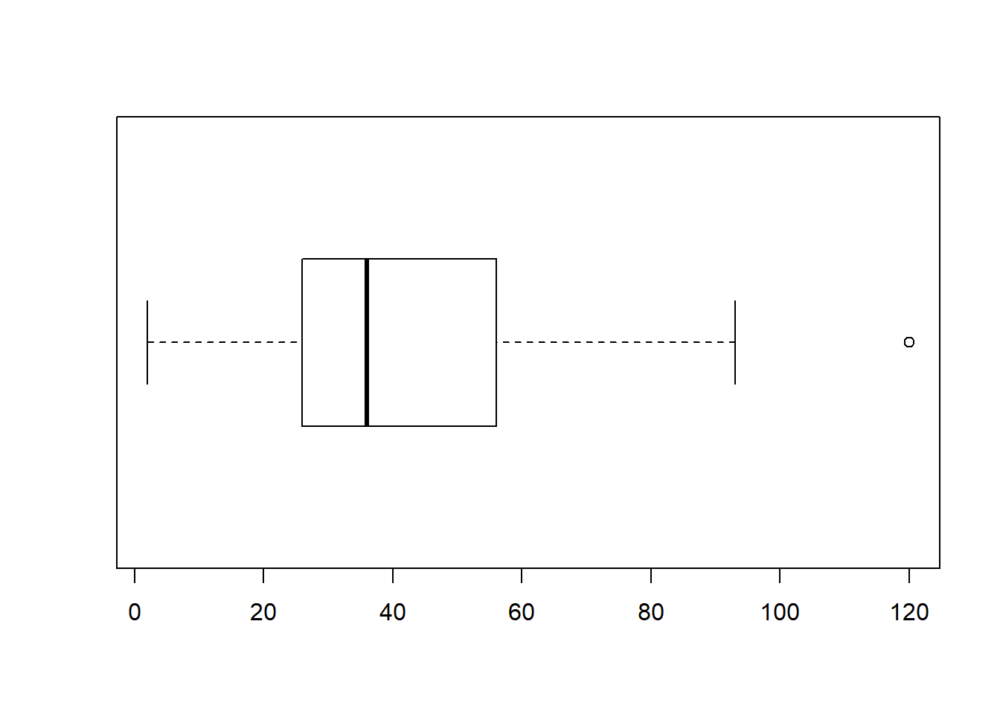
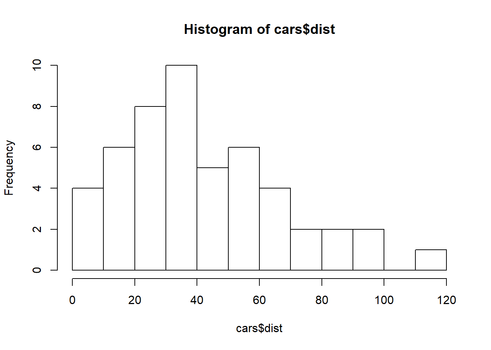
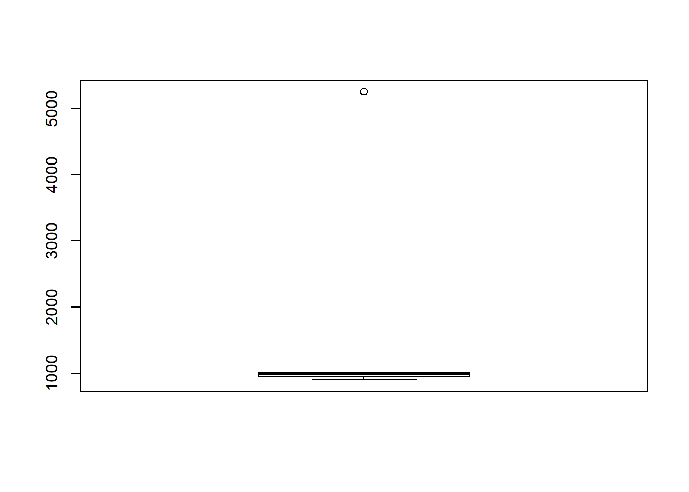

Bar chart showing number of cases in each “bin”, the bin can be defined in many different ways with different “widths”.
In R there is a basic histogram function:
hist(cars$dist)
This basic functionality can be enhanced using ggplot, this time modified so bin width is 10.
library(ggplot2)
# Basic histogram.
# Note have to set boundary to make it start from zero, otherwise get strange results.
# Can either set the binwidth to a number to split the bins into clear groups
# e.g. 0 to 500, 500 to 1000, or set number of bins e.g. bins=20
# Tips from http://www.sthda.com/english/wiki/ggplot2-histogram-plot-quick-start-guide-r-software-and-data-visualization
ggplot(cars, aes(x=dist)) +
geom_histogram(binwidth=10, boundary =0, color="black", fill="white") +
geom_vline(aes(xintercept=mean(dist)), color="blue", linetype="dashed", size=1) +
# NOTE to get the labels have to make sure the statbin is the same as the histogram
stat_bin(binwidth=10,boundary=0, geom="text", aes(label=..count..) ,
vjust = -0.5, hjust = 0.5) +
scale_x_continuous(breaks = seq(0 , max(cars$dist)*1.1 , 10 ))
Relative frequency histogram - replaces the counts of cases in each bin with percentage of total cases.
\(\color{red}{\text{SWEDISH: Relativfrekvens = relative frequency histogram}}\)
Useful for creating mini charts by hand. Say we have the number 32, 33, 35, 45, 49, 53, 56, 61, 62, 62, 62
We can define our “stem” (or bins) as the “tens” and then the units as the leaves so:
3 | 2 3 5
4 | 5 9
5 | 3 6
6 | 1 2 2 2
It creates a little side-on bar chart :-)
You can’t show categorical data in a histogram and you can’t show quantitative data in a bar chart (not sure what the book means here..)
If the histogram just looks like a mountain, then it is called “unimodal”. A mode in a histogram is a mountain peak. A histogram with 2 peaks will be bi-modal and three or more will be multimodal. A flat histogram is called uniform.
A histogram that is even on both sides of the peak is symmetrical. Most histograms will have a “tail” where the distribution thins out to one side. This longer tail is the skewed side of the histogram. Cases at the very ends of a distribution are known as outliers.
\(\color{red}{\text{SWEDISH: Skevhet (ett histogram är snett) = Skewdness}}\)
\(\color{red}{\text{SWEDISH: Fördelningsformer \n Formen till ett histogram kan beskrivas fråntre aspekter: \n (1) mode (eller typvärde på svenska) \n (2) symmetri och \n (3) outliers (eller uteliggare på svenska).}}\)
To be able to say something about the different cases and the deviation in the distribution we must first find the center of distribution.
This can be measured in a number of different ways.
The median is the case that is found in the middle of all the other cases. This means we just count the cases from the left of the histogram until we reach half the cases, and whatever value that middle case has is the median. If we are looking at a table then we sort the data in size order and then find the middle value.
However, the median is not always (or often) the best way of finding out anything about the most “common” case. Instead the median gives us a way of comparing the center to the spread.
median(cars$dist)## [1] 36The spread describes how much the data values vary around the center.
The range of the data is a single number calculated by simple taking the minimum value in the data with the maximum.
To avoid extreme cases affecting interpretation of the data, we can look at the middle half of the data.
Measuring IQR in R can be done in several different ways. See next section.
Let’s start with getting a “5-number” summary of the data:
The standard R summary gives the following results:
summary(cars)## speed dist
## Min. : 4.0 Min. : 2.00
## 1st Qu.:12.0 1st Qu.: 26.00
## Median :15.0 Median : 36.00
## Mean :15.4 Mean : 42.98
## 3rd Qu.:19.0 3rd Qu.: 56.00
## Max. :25.0 Max. :120.00Note, however, that there are different ways of calculating the IQR in statistics generally and in R.
Note that R has another function called “fivenum” which gives slightly different results. It also provides no table headers, which is frustrating.
fivenum(cars$dist)## [1] 2 26 36 56 120The “quantile” function can also be used.
quantile(cars$dist)## 0% 25% 50% 75% 100%
## 2 26 36 56 120Although not seen with this dataset, the difference between fivenum() and summary() lies in the lack of universal agreement on how the 1st and 3rd quartiles should be calculated. See this page for a summary: https://chemicalstatistician.wordpress.com/2013/08/12/exploratory-data-analysis-the-5-number-summary-two-different-methods-in-r-2/
The IQR is calculated as the range between the 1st and 3rd quartiles (the “middle” of the data) and is simply calculated as IQR3-IQR1. So in the case of the cars’ distance, it is 56 - 26 = 30.
R has an inbuilt IQR function to calculate this.
IQR(cars$dist)## [1] 30Boxplots are ways of visualising the the data, showing the spread of cases in the “middle” of the data (in the IQR) and the extents of the “fenced data” and finally the outliers.
The fences are a concept developed by John Tukey, with the idea that a useful way of understanding a population is too look at those cases that are within the ranges close to IQR1 and IQR3.
Using the IQR, you can then calculate the lower and upper Tukey fences, developed by John Wilder Tukey.
Note that the rounding gives slightly different figures when done by hand as it is based on the rounded numbers from the 5-number summary:
LowerFence = Q1 - (1.5 IQR) = 26 - (1.5 30) = 26 - 45 = - 19 UpperFence = Q3 + (1.5 * IQR) = 56 + (1.5 * 30) = 56 + 45 = 101
Let’s make the calculation with R:
carsIQR <- IQR(cars$dist)
carsIQR## [1] 30# Lower Fence
LowerFence <- 26 - (1.5 * carsIQR)
# Upper Fence
UpperFence <- 56 + (1.5 * carsIQR)
# Get figures
print(LowerFence); print(UpperFence)## [1] -19## [1] 101The lower fence is well below the minimum case in the data, so there are no outliers for low-value cases. However, the maximum case in the data (120) is greater than the upper fence of 101, so we have outliers for high-value cases.
Let’s make a boxplot and compare it to the histogram
boxplot(cars$dist, horizontal = TRUE)
boxplot(cars$dist, horizontal = TRUE)hist(cars$dist, breaks =10)
And sure enough, the boxplot shows one outlier and the IQR of 30 between the values of 26 and 56.
\(\color{red}{\text{SWEDISH: intervallsbredd = histogram bins}}\)
The mean is the sum of the total values divided by the total number of cases. In Greek the letter “simga” (s) is used for sum \(\sum\) which in Rmarkdown is rendered like this:
$\sum$NOTE for mathematics symbols in RMarkdown see https://www.calvin.edu/~rpruim/courses/s341/S17/from-class/MathinRmd.html
So the formula to calculate the Mean is Total/n, or:
\(\frac{\sum {y}} n\)
“Y” is used for variables used to summarise or model data. “X” is used for summarising/modelling predictions for “Y”.
The Mean is called “y-bar” sometimes and symbolised like this: \(\overline{y}\)
The full mathematical notation for the formula is: \(\overline{y}\) = \(\frac{\sum {y}} n\)
In symmetrical distributions the Mean and the Median should be very close to each other.
The Mean also provides the exact center of balance for the VALUES of the cases in a population. However, it doesn’t give a good guide to frequency since if the data is skewed by a few high values you will get a high “mean” where the majority of actually cases might be the the left of it rather then the right.
Consider salaries where the boss earns a lot and the rest of the staff earn more or less the same:
salary.df <- data.frame(Salary = c(1000, 900, 950, 955, 1010,5250))
salary.df <- data.frame(Salary = c(1000, 900, 950, 955, 1010, 999, 1020, 5250))
summary(salary.df)## Salary
## Min. : 900.0
## 1st Qu.: 953.8
## Median : 999.5
## Mean :1510.5
## 3rd Qu.:1012.5
## Max. :5250.0Here the mean is calculated as 1510, but no-one earns more than 1020 apart from the boss. In this case the Median is a good guide (but of course we need the rest of the 5-number summary to explain what else is going on).
If we map a boxplot we get a pretty pancake-looking box:
boxplot(salary.df)
So because the median looks only at the sorted order of values, we say that it is RESISTANT to VALUES.
So when deciding whether to describe the center using the MEan or the Median, the guide is that the mean is best when the distribution is symmetrical but the Median is best when it is skewed.
While the IQR is a good way of summarising spread, the fact that it looks at only two quartiles of data means it can’t say much about individual deviations. IF the data is symmetric then a more powerful analysis tool is standard deviation which works out how far each value is away from the mean.
If we then averaged the deviations from the mean then the positive deviations will cancel out the negative ones.
So instead we square the deviations to make them positive. Then add up the squared deviations and find the average, which gives the “VARIANCE”
$ s^{2$ “s” always denoted the standard deviation, it means the variance of a set of data
$ $ is the mean
For each data point, take away the mean and then square the result
So the variance formula is
$ s^{2}= $
Note that instead of dividing by the number of cases (n) we divide by the number of cases minus 1 because reasons…
To get back to the original units (since we are currently in squared units) have to get the square root, so the final formula is
$ s= $
If there is no spread at all, and all the values are identical, then the deviation is zero.
When trying to say something about a variable, consider the following:
questA <- data.frame(Set1 = c(4,7,8,9,12), Set2 = c(3,6,8,10,13))
summary(questA)## Set1 Set2
## Min. : 4 Min. : 3
## 1st Qu.: 7 1st Qu.: 6
## Median : 8 Median : 8
## Mean : 8 Mean : 8
## 3rd Qu.: 9 3rd Qu.:10
## Max. :12 Max. :13sd(questA$Set1)## [1] 2.915476sd(questA$Set2)## [1] 3.807887cat("Set 1 standard deviation = ", sd(questA$Set1), "\n")## Set 1 standard deviation = 2.915476cat("Set 2 standard deviation = ", sd(questA$Set2))## Set 2 standard deviation = 3.807887Set 2 did have the highest Standard Deviation with a value of 3.8
questB <- data.frame(Set1 = c(100,140,150,160,200), Set2 = c(10,50,60,70,110))
summary(questB)## Set1 Set2
## Min. :100 Min. : 10
## 1st Qu.:140 1st Qu.: 50
## Median :150 Median : 60
## Mean :150 Mean : 60
## 3rd Qu.:160 3rd Qu.: 70
## Max. :200 Max. :110sd(questB$Set1)## [1] 36.05551sd(questB$Set2)## [1] 36.05551cat("Set 1 standard deviation = ", sd(questB$Set1), "\n")## Set 1 standard deviation = 36.05551cat("Set 2 standard deviation = ", sd(questB$Set2))## Set 2 standard deviation = 36.05551Comments - wrong! It doesn’t matter what the starting numbers are, the squared differences will be the same? This was slightly counterintuitve :-)
questC <- data.frame(Set1 = c(10,16,18,20,22,28), Set2 = c(48,56,58,60,62,70))
summary(questC)## Set1 Set2
## Min. :10.0 Min. :48.0
## 1st Qu.:16.5 1st Qu.:56.5
## Median :19.0 Median :59.0
## Mean :19.0 Mean :59.0
## 3rd Qu.:21.5 3rd Qu.:61.5
## Max. :28.0 Max. :70.0sd(questC$Set1)## [1] 6.033241sd(questC$Set2)## [1] 7.238784cat("Set 1 standard deviation = ", sd(questC$Set1), "\n")## Set 1 standard deviation = 6.033241cat("Set 2 standard deviation = ", sd(questC$Set2),"\n")## Set 2 standard deviation = 7.238784cat("Note that the IQR for both sets is also the same", "\n")## Note that the IQR for both sets is also the samecat("Set 1 IQR = ", IQR(questC$Set1), "\n")## Set 1 IQR = 5cat("Set 2 IQR = ", IQR(questC$Set2),"\n")## Set 2 IQR = 5Yes, that was correct!
This stem and leaf data (50 cases - the population of 50 states in the US in millions)
0 | 1111111111122223333334444
0 | 555556666667789
1 | 000233
1 | 99
2 |
2 | 5
3 |
3 | 7
Which measure of center and spread are most appropriate? Most appropriate to use Median and IQR since the data is heavily skewed to the right
Which must be larger, the median or the mean? The Mean because it will be skewed to the right by the large population figures of two states
Find median and IQR? Median = average of 25th and 26th data points = 4 million + 5 million /2 = 4.5 million IQR = 3rd Quartile - 1st Quartile 1st Quartile = average of 12th & 13th data point = 2 million + 2 million / 2 = 2 million 3rd quartile = average of 37th & 38th data point = 7 million + 8 million /2 = 7.5 million IQR = 7.5 - 2 = 5.5 million
describe the distribution
The data is unimodal, and is heavily skewed to the right. There are two obvious outlier with populations of 25 and 37 million, therfore the best approach is to use Median and IQR for this data. A box plot would show quite a “pancaked” box, with long upper fence.